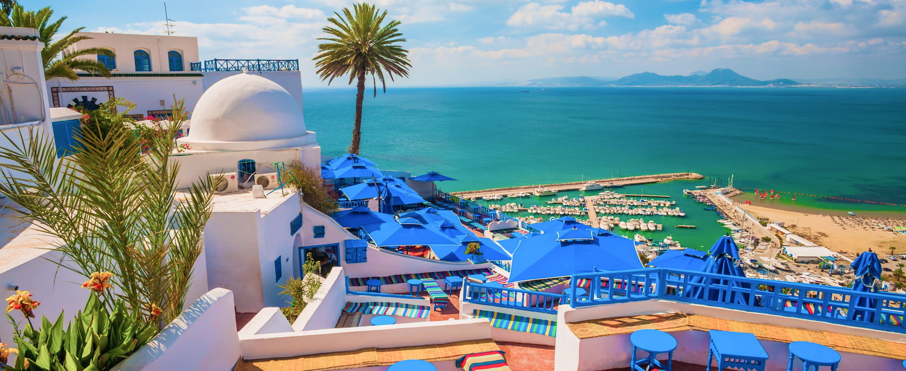
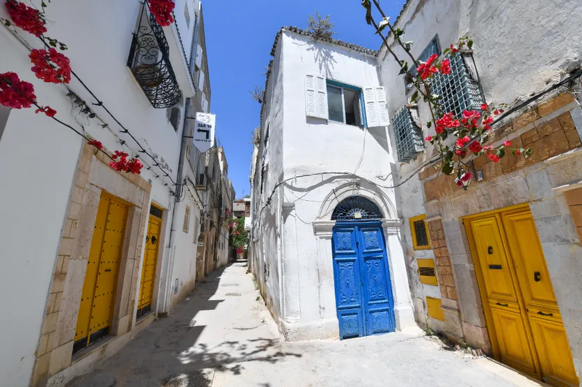
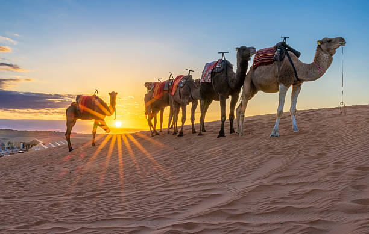
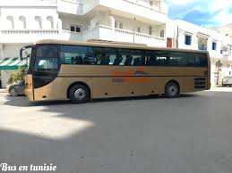

Inventa Tourisme, the leading agency for personalized travel in Tunisia, offers authentic experiences to explore historical sites and local traditions. We are experts in customizing cultural tours that paint beautiful memories.
Honored as one of Tunisia's innovative tour operators, we are experts in tailoring the best private tours, ensured by our local guides across all Tunisian regions.
With expanding horizons, we are dedicated to providing stress-free travel services, creating travel highlights from the Mediterranean sea to the Sahara desert.
Tunisia offers a breathtaking blend of two contrasting worlds: ancient soul of the Medina and the infinite silence of Sahara. While the Medina captivates you with its narrow alleys and jasmine, the desert invites you into a vast golden landscape. This unique mixture creates an unforgettable journey where heritage meets nature in perfect harmony.

Explore the soul of the Medina,
Discover the hidden soul of Tunis through its winding alleys and
secret doors
and Lose yourself in the scent of jasmine and the echoes of
ancient tales.

Uncover the magic of the Sahara
where time stands still
and the horizon knows no limits"

For conquering the Sahara dunes in comfort and safety.

Ideal for large groups, air-conditioned and spacious.

Perfect for family outings or groups of friends.
More than just an accompanying person, our guide is a passionate expert who will show you the hidden secrets of Tunisia. Culture, history, and local anecdotes guaranteed!
Coastal relaxation, visit the historic Medina and the Kasbah with stunning sea views.
Explore Ancient Carthage ruins, the blue-white village of Sidi Bou Said, and the Tunis Medina.
Visit the Roman site of Dougga (Beja) and the lush forests of Ain Draham.
The Great Mosque of Kairouan and the world-famous Roman Amphitheater of El Jem.
Discover Houmt Souk, the Ghriba Synagogue, and the beautiful beaches of the Island of Dreams.
Visit the Andalusian village of Testour (famed for its clock) and explore the majestic Roman ruins of Dougga, a UNESCO World Heritage site.
Taste the famous Borzgan in Beja, then head to the mountains of Ain Draham for a hike in the cork oak forests.
Discover the Old Port of Bizerte, the Spanish Fort, and enjoy the Mediterranean breeze at Cap Blanc.
Arrival, Tunis Medina, Carthage ruins, and a day trip to the charming Old Port of Bizerte.
Relaxation in Hammamet, followed by a spiritual journey to the Great Mosque of Kairouan.
Marvel at El Jem Amphitheater, then head deep into the palm groves and Star Wars sets in Tozeur.
Camel trekking in the Douz dunes and staying in the unique underground troglodyte houses of Matmata.
End your journey in Djerba: explore Djerbahood, visit the Ghriba, and enjoy the sun before departure.
"An unforgettable journey! The Dougga tour was perfectly organized. Our guide was so knowledgeable."
"Inventa Tourism made our Sahara trip magical. The 4x4 expedition was the highlight of our year!"